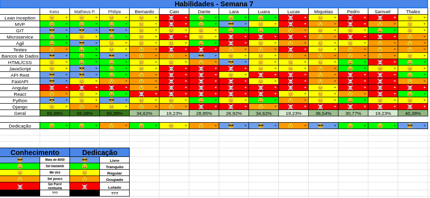

Histórico de Revisão
| Data | Versão | Modificação | Autor(a) |
|---|---|---|---|
| 10/06/2025 | 0.1 | criação do documento de review da sprint 5 | Matheus Pimentel Leal |
Membros presentes
| Nome | Equipe | Presente? |
|---|---|---|
| Matheus Pimentel Leal | EPS | ✅ |
| Kess Jones | EPS | ❌ |
| Philipe | EPS | ❌ |
| Bernardo (wata) | MDS | ✅ |
| Caio | MDS | ❌ |
| Dante | MDS | ❌ |
| Lara | MDS | ✅ |
| Luara | MDS | ✅ |
| Lucas de Paula | MDS | ✅ |
| Miqueias | MDS | ✅ |
| Pedro | MDS | ✅ |
| Samuel | MDS | ❌ |
| Thales Duarte | MDS | ✅ |
Review Sprint 6
- Revisão geral de como foi a sprint anterior.
Tasks
| ID | Descrição | Assignees | Finalizada |
|---|---|---|---|
| #31 | Configuração da autenticação por token JWT | Thales e Caio | ✅ |
| #30 | Rota de autenticação de usuários | Caio e Thales | ⚠️ |
| #68 | Redesign do protótipo de alta fidelidade | Lucas e Miqueias | ⚠️ |
| #70 | Criar testes unitários de CRUD de usuários backend | Dante e Lucas | ❌ |
| #39 | Conexão websocket com o servidor | Luara e Wata | ⚠️ |
| #69 | Integração frontend e backend (Página de login e cadastro) | Lara e Pedro | ⚠️ |
| #32 | Tela dashbaord do mestre | Miqueias e Samuel | ⚠️ |
| #33 | Tela dashboard do jogador | Miqueias e Samuel | ⚠️ |
| #66 | Refatoração da tela de login | Luara e Lara | ✅ |
| #28 | Criação da tela de cadastro | Wata e Pedro | ⚠️ |
Legenda
- ✅ Concluida
- ⚠️ Impedida / Em code Review
- ❌ Nao finalizada
Qualidade do Trabalho Entregue
O pouco trabalho que foi de fato entregue teve boa qualidade, contando com testes unitarios no desenvolvimento backend e com os padroes estabelecidos no projeto frontend.
Retrospectiva
Pontos Positivos
- Material disponibilizado ajudou no desenvolvimento
- Comunicacao para dependencia de tasks foi relativamente boa, o que deixou as espectativas sobre conclusao de tasks mais realista
- Disposicao de EPS para ajudar, devemos apenas driblar os empecilhos de tempo
- Disposicao de MDS para desenvolver continua boa, devemos apenas driblar os empecilhos de tempo
Pontos Negativos
- Muitas tasks foram iniciadas, mas poucas foram finalizadas.
- Relacao de entrega / inicio de tasks esta baixa
Pontos de Melhoria
- Comunicacao sobre finalizacao de tasks / code reviews deve melhorar
- Finalizacao das tasks prioritarias deve ter mais urgencia para mitigar os danos causados pela demora de entrega
Planning da Sprint 7
- Período: 09/06/25 a 16/06/25
- Objetivo: Finalização das tasks da sprint passada, revisão das tasks concluídas, implementação do websocket e realização das correções de EPS.
Tasks alocadas
| ID | Descrição | Assignees |
|---|---|---|
| #30 | Rota de autenticação de usuários | Caio e Thales |
| #68 | Redesign do protótipo de alta fidelidade | Lucas e Miqueias |
| #70 | Criar testes unitários de CRUD de usuários backend | Dante e Lucas |
| #39 | Conexão websocket com o servidor | Luara e Wata |
| #69 | Integração frontend e backend (Página de login e cadastro) | Lara e Pedro |
| #32 | Tela dashbaord do mestre | Miqueias e Samuel |
| #33 | Tela dashboard do jogador | Miqueias e Samuel |
| #28 | Criação da tela de cadastro | Wata e Pedro |
Combinados para esta sprint
- Assim que os PRs forem abertos, informar a todos no grupo
- Ajudar mais o pessoal de MDS
- Assim que os code reviews forem concluidos, informar a todos no grupo
Possíveis Riscos Mapeados para a Sprint 7
- Provas na semana
- Gerenciamento de tempo
- Membros terem problemas de saúde
- Demora pra finalização dos reviews
- Demora pra realização das correções de EPS
Quadro de Conhecimento
